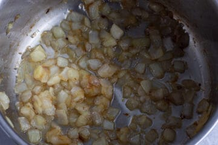
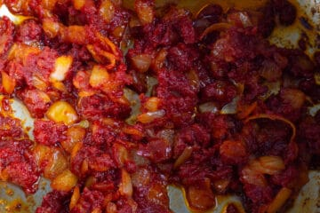
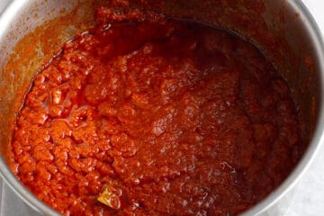

Nigerian Jollof Rice
Description
Jollof is prepared by cooking rice in a rich tomato sauce with spices and stock, with all the flavours melded together to create a delightful eating experience. It can be cooked with meat, fish and vegetables; and served at festivals, parties and get-togethers - In Nigeria, we say, “no party is complete without jollof”. This dish is so loved that the flavours and name are carried on to other dishes
Ingridients:
- 2 cups cooked rice
- Red bell pepper
- Tomatoes
- Onion
- Scotch bonnet pepper
- Sunflower oil
- Tomato paste/puree
- Mild curry powder
- Dried thyme
- Bay leaves
- Chicken stock
- Chicken stock cubes
- Sella/Golden basmati Rice
- Salt
Steps
- Wash the tomatoes and peppers. Remove the stalk from the peppers. Peel the onions and the garlic cloves.
- Wash the rice under a cold tap until the water runs clear, and drain in a colander.
- Cut one onion into quarters and add into a blender. Add the tomatoes, red bell pepper, scotch bonnet pepper, garlic and ginger, then add half a cup of water and liquidize until smooth. Keep aside.
- Chop the remaining onion.
- Heat the oil in a pan under medium heat, then pour the chopped onions. Cook until the onions start to brown.

- Add the tomato paste and reduce the heat. Use a wooden spoon to stir while it fries for 5 mins.

- Raise the heat to medium. Pour two cups of the blended peppers mix into the pan. Add the curry powder, nutmeg, and bay leaves, then sprinkle in the stock cubes. Mix well with a wooden spoon and allow to cook while stirring occasionally. Cook until the moisture has reduced significantly and the oil has settled on the surface. This will take at least 20 mins.

- Add the chicken stock and mix the rice into the pan. Then add 1 cup of water, taste for salt and add more if needed. Allow the rice to come to a boil, then reduce the heat. Place a sheet of aluminium foil over the rice, then cover the pan.
- Check after 10 mins and stir the rice with a wooden spoon. Repeat more frequently the until the rice is cooked through and has absorbed all the sauce. This will take at least 30 mins.
- Remove from heat, stir with a wooden spoon, put the lid back on and leave for a few minutes before serving.